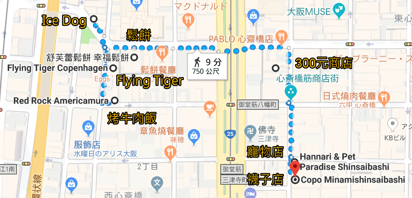

回上一頁
(金久右衛門→激安殿堂→安德魯餅店→大創)
TEMP連結
示意圖

元祖アイスドッグ [官網] 營業時間：11:00~21:00
有座位可內用
冰淇淋熱狗堡400
Flying Tiger Copenhagen [官網] 營業時間：11:00~20:00
Hannari & Pet Paradise Shinsaibashi [官網] 營業時間：11:00~20:30
COPO [官網] 營業時間：11:30~21:30